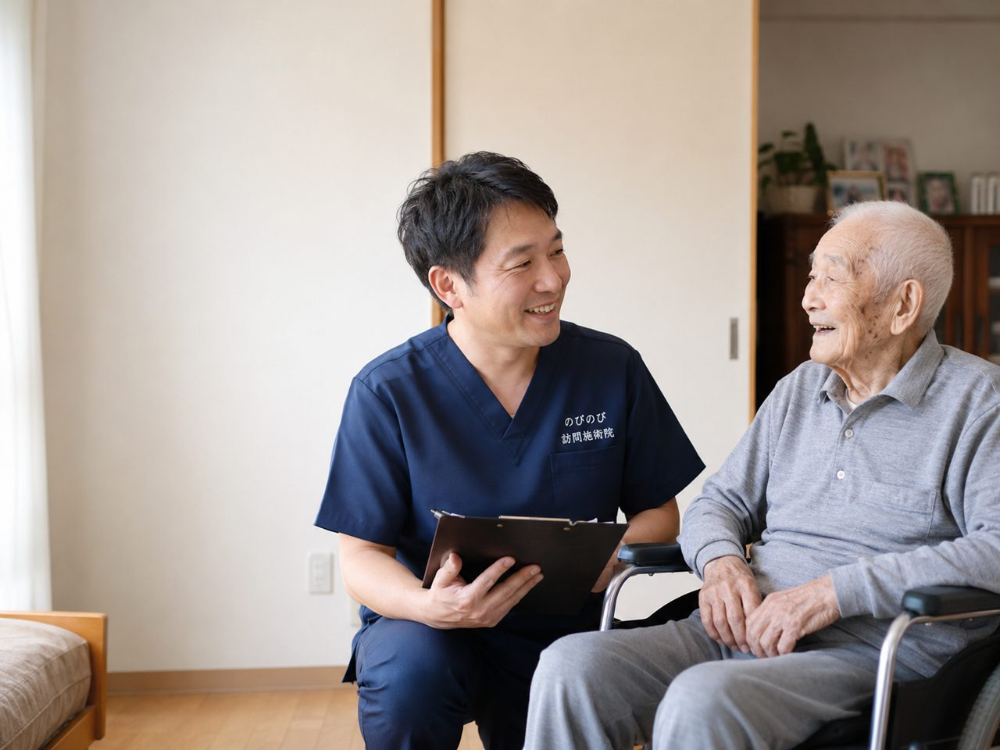

「訪問施術に関心はあるけれど、うちの親が対象になるのか分からない」。この一点で問い合わせをためらう方が多くいらっしゃいます。ただ、判断のポイントはそれほど込み入っていません。医師が施術の必要を認める慢性的な症状があること、そして自分で通院するのがむずかしいこと。この2つがそろえば、年齢や特別な資格に関係なく、医療保険で受けられます。その条件を現場での実感も交えながら整理していきます。
この記事のポイント
訪問鍼灸マッサージで対象になるのは、医師が鍼やお灸による施術の必要を認めた、慢性的な痛みやしびれ、麻痺にともなうこわばりなどがある方です。あわせて、自力での通院がむずかしいことも条件になります。坐骨神経痛や神経痛、リウマチ、五十肩、腰痛、膝痛、脳梗塞後遺症、パーキンソン病などが代表例。要介護認定は不要で、年齢制限もありません。施設に入居している方も受けられます。1回は総額3,950円、1割負担なら約395円。対象になるか迷うときは、まず相談で確かめられます。
対象になるのは「自分で通うのがむずかしい」方です
まず押さえておきたいのは、訪問での施術が誰にでも使える便利なサービスではない、という点です。前提になるのは「自分の力で施術所まで通うのがむずかしい」という状態。慢性的な痛みやしびれ、こわばり、あるいは麻痺があって、体を動かすこと自体に負担がある方が中心になります。
対象になるかどうかを含めて、一度会って確かめたいときは「無料体験」をご利用いただけます。費用はかかりません。
もう少し具体的に描くと、歩行が不安定で外に出るのが怖い、寝たきりに近い、車いすを使っている、ひとりでの外出には付き添いが欠かせない、あるいは通院そのものが体力的にこたえてしまう。こうした事情を抱えた方が、自宅で施術を受ける対象になります。逆に、ご自身でバスや電車を使って通える方であれば、近くの施術所に通っていただくほうが合っています。
症状の面では、どんな方が当てはまるのか
はりときゅうについては、慢性的な痛みが中心です。保険の対象として認められているのは、神経痛・リウマチ・頸肩腕症候群・五十肩・腰痛症・頸椎捻挫後遺症の六つ。長く続く腰の痛みや、肩から腕にかけてのしびれ、古傷のように残る首の不調などが、ここに含まれます。
もうひとつのあん摩マッサージ指圧の療養費は、症状名で線引きするというより、体の状態で判断される枠組みです。のびのび訪問施術院は、はり・きゅうを施術のベースにしていて、保険はすべて鍼灸で算定します。脳梗塞のあとに残った麻痺やパーキンソン病にともなうこわばりでも、それにともなう痛みやしびれについて医師が施術を必要と認めた場合は、はり・きゅうの対象になります。ここで一つ、正直にお伝えしておきたいことがあります。訪問施術は病気そのものを治すものではありません。あくまで痛みやこわばりをやわらげ、体を動かしやすい状態に近づけることを目的としたもので、感じ方や変化には個人差があります。
要介護認定はいりません。年齢の制限もありません
問い合わせでいちばん多い誤解が、この二つです。「介護認定を受けていないと使えないのでは」と思っている方が多いのですが、そんなことはありません。訪問鍼灸マッサージは医療保険を使う仕組みなので、要介護認定の有無とは切り離して考えて大丈夫です。認定を受けていない方でも、条件が合えば利用できます。
年齢についても決まりはありません。実際に受けている方は高齢の方が多いものの、それは「通院がむずかしい」という状態が高齢の方に多いというだけの話です。若い方であっても、けがや病気のあとで体が思うように動かず、通院が難しい状況にあるなら対象になり得ます。年齢で門前払いになることはない、と考えてください。
前提になるのは、医師の同意書です
ここが実際のところ、いちばん大事な条件になります。医療保険（療養費）で施術を受けるには、かかりつけの医師が「はり・きゅうによる治療が必要」と認めた同意書が欠かせません。これがないと、どれだけ症状が当てはまっていても保険は使えません。同意書の取り方や書いてもらう際の注意点については「医師の同意書とは？取得の流れと注意点」で詳しく整理していますので、あわせて読んでいただくと流れがつかめると思います。書類のやり取りは当院が引き受けますので、身構える必要はありません。
介護保険を使っている方も、そのまま併用できます。この施術で使う医療保険の枠は、介護保険の支給限度額とは別に扱われるため、デイサービスやヘルパーの利用と並行して受けられます。関節を動かす機能訓練も鍼灸に加えるケアとしており、これに追加の費用はかかりません。ただし、同じ部位について医療保険のリハビリを受けている場合、その部位への鍼灸は同時には算定できない決まりがあります。この点だけは事前に確認させてください。
対象になりにくいケースもお伝えします
都合の良いことばかり並べても仕方がないので、当てはまりにくい例も書いておきます。まず、ねんざや打撲、骨折した直後のような急なけが。こうした場合は整骨院や整形外科での処置が先です。応急的な対応が必要な段階で訪問施術を受けるものではありません。
それから、痛みや不調があるわけではなく、気持ちよさやリラクゼーションだけを求めている場合。これは保険の趣旨から外れるため、対象にはなりません。症状があっても保険の枠に当てはまらないこともあります。判断に迷うときは、まず主治医や医療機関に相談してみてください。そのうえで「治療として必要」と認められれば、そこから訪問施術の話が動き出します。
費用はどのくらいになるのか
対象になるかどうかと並んで気になるのが、お金のことだと思います。当院の施術は1回あたり総額3,950円で、このうち保険で自己負担する分は割合によって変わります。1割の方でおよそ395円。1回あたり数百円の負担で受けられる方が多くなります。
続けて受ける場合の目安も出しておきます。週2回のペースで受けると、1割負担の方で月におよそ3,160円。保険が使える6つの症状ごとの詳しい料金や条件は「鍼灸で保険が使える6つの症状と料金」をご覧くださいので、ご自身の症状に当てはめて確認してみてください。
「うちの親は対象になる？」への答え合わせ
ここまでの話を、ご家族の顔を思い浮かべながら整理してみます。長引く痛みやしびれ、こわばり、麻痺があって、自分で施術所まで通うのがむずかしい。この二つがそろっていて、医師が治療の必要を認めてくれる。そうであれば、要介護認定や年齢に関係なく、対象になる可能性は十分あります。
反対に、通おうと思えば通える状態だったり、けがの直後だったり、慰安が目的だったりする場合は、別の選択肢のほうが合っています。判断に迷ったら、電話一本で状況を聞かせていただければ、対象になりそうかどうかその場でお答えできます。まずは今の困りごとを、そのまま話してみてください。
対象かどうかの短い答えはよくある質問にも並べています。どんな施術を受けられるのかはサービス内容をご覧ください。
よくある質問
どんな人が保険で受けられますか？
医師が鍼やお灸による施術の必要を認め、自力での通院がむずかしい方が対象です。坐骨神経痛やリウマチ、五十肩、腰痛、膝痛、脳梗塞後遺症、パーキンソン病など、慢性的な痛みやしびれ、麻痺にともなうこわばりが目安になります。自分で判断できなくても、体の状態を伺えばこちらで整理してお伝えします。
若くても受けられますか？
年齢制限はありません。ご高齢の方が中心ではありますが、慢性的な痛みやしびれがあり、通院がむずかしい状況であれば、若い方でも対象になり得ます。まずは今の症状と通院の状況を教えてください。
寝たきりの状態でも受けられますか？
受けられます。横になったままでも、その方の状態に合わせて鍼やお灸、手技を行います。まったく歩けない状態である必要はなく、通院がむずかしいという段階から対象になり得ます。
要介護認定がなくても受けられますか？
はい。訪問鍼灸マッサージは医療保険のしくみなので、要介護認定の有無に関わらず受けられます。認定がなくても、医師の同意書があれば利用できます。すでに介護サービスを使っている方も、併用できます。
施設に入っていても受けられますか？
有料老人ホームやサービス付き高齢者向け住宅など、施設に入居している方のところにも伺えます。施設に入っていること自体は、利用のさまたげにはなりません。認知症がある方でも、ご家族や施設の方の協力があれば受けられます。
対象にならないのは、どんな場合ですか？
これといった慢性的な症状がなく元気に通院できている方や、リラクゼーション目的の場合は、保険の対象にはなりません。転んだ直後の強い痛みや、急な腫れ・発熱をともなうけがなど急性の症状は、まず整形外科などの受診が先になります。落ち着いてきた段階で、あらためてご相談ください。
対象になるか分からないときは、どうすればいいですか？
まずはお電話で、体の状態と通院の状況をお聞かせください。対象になりそうかどうかをその場でお伝えします。相談だけなら費用はかかりませんし、無理におすすめすることもありません。同意書の手続きが必要な場合も、のびのびが段取りします。
費用はどのくらいかかりますか？
1回の施術は総額3,950円で、お支払いは負担割合の分だけです。1割の方で約395円が目安。別途の出張費や交通費はかからず、エリア内は同額です。使うのは医療保険なので、介護保険の限度額とは別枠で利用できます。